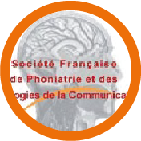
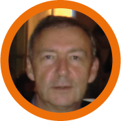

Paris
Société française de Phoniatrie
Nous avons collaboré avec cette société dans le cadre d’une recherche sur les troubles de la voix chantée, et parlée. Ainsi que sur les troubles de la déglutition. Les résultats de cette recherche ont étés très fructuant et nous sommes fiers de cette collaboration avec la France.
Philadelphie
Personne(s) de contact :
Robert Sataloff
Depuis 2007, nous présentons régulièrement nos recherches à ce congrès annuel de la voix.
Montreal
Personne(s) de contact :
Isabelle Peretz
Pauline Larrouy-Maestri a séjourné 5 mois au laboratoire Brams grâce à une bourse.
Marseille
Personne(s) de contact :
Antoine Giovanni & Joana Revis
Antoine Giovanni est en charge de l'équipe Phonologie qui gère les thématiques de recherche liées à la voix et aux cordes vocales: chirurgie du larynx et phono-chirurgie, étude de la vibration des cordes vocales et modélisation mathématique du larynx, analyse objective et perceptive des dysphonies.
Dominique Morsomme a contribué en tant que sujet à une étude sur la pression sous glottique estimée (Benoit Amy de la Bretèque).
Docteur en orthophonie, Joana Revis est une collègue avec qui nous partageons nos thèmes de recherche et qui est invitée de temps à autre pour enrichir le cours des étudiants en logopédie du Master 2.
Londres
Personne(s) de contact :
John Rubin
Dominique Morsomme a séjourné 3 mois au University College of London
auprès de John Rubin.
Anvers
Personne(s) de contact :
Marc De Bodt
Marc De Bodt enseigne la voix à la faculté de médecine et de psychologie de Gand et d’Anvers. Il est également clinicien à l’hôpital d’Anvers spécialisé dans les troubles de la voix et de la parole. Nous avons collaboré à la traduction en néerlandais du Voice Handicap Index pour chanteurs.
Gand
Personne(s) de contact :
Ben Barsties
Ben Barsties a rejoint l'Université de Zuyd à Heerlen en 2011 (NL) pour étudier l'orthophonie Baccalauréat en santé /Orthophonie. Son objectif professionnel est le diagnostic, le traitement et la prévention des troubles de la voix.
Actuellement, il travaille avec des collègues belges et néerlandais sur des projets scientifiques pour le diagnostic de la voix et l'influence de divers facteurs sur les caractéristiques de la voix.